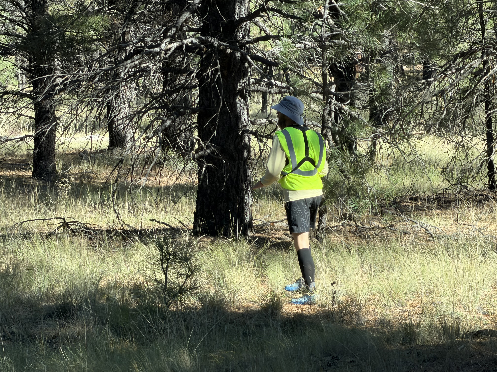
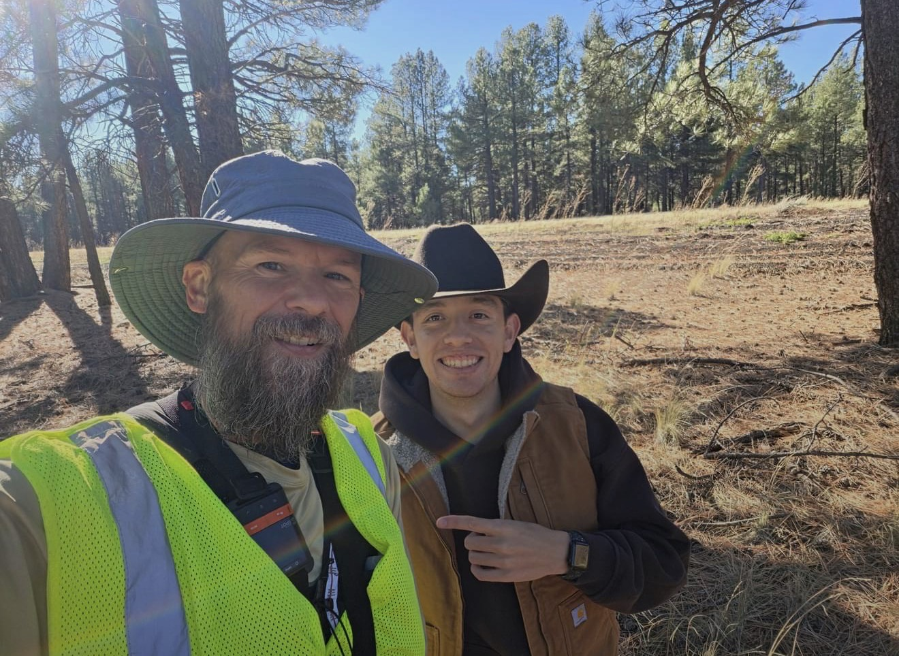

We started out the day in Flagstaff and said goodbye to our hotel, sadly. Heading out of town was quite chilly and windy but it blew at his back so that helped. But what worked better than the wind for a burst of energy for our guy was that one of Jefferson’s friends, Saul, happened to be driving by on his way to the Grand Canyon and he stopped and ran over to say hello and give a hug! A miracle.
I’ve been noticing little miracles all along the way during this journey and it’s helpful to know that we are not alone and that our Creator and Father is aware of us and of our struggles and need for connection and purpose.
Ryan ended up going about 30 miles total. He was hoping for more but his body is kind of tired. After over two hundred miles and a hike down and up the Grand Canyon, his batteries are low. So we went off to Prescott for a night at my dear sister’s house and rest and recharge.
It was kind of a tough day, nothing really held us back, the weather was good and the road was mostly downhill, it was just hard. Some days are like that and that’s okay. If we can be kind to ourselves and give ourselves credit for the effort we put forth it will save us a lot of heartache. Unfortunately that’s not our natural tendency though. We kick ourselves when we are down and tell ourselves that we just aren’t good enough. But we are. We are worthy and wonderful and just doing our best.


Comments for This Day